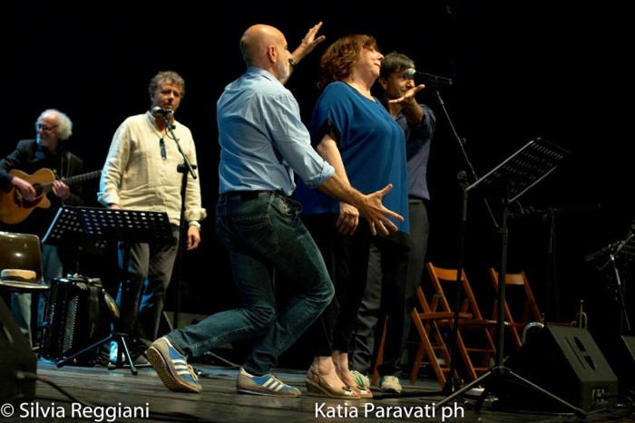

Un'edizione davvero speciale quella del Carcano.
La conduzione sapiente di Marino Bartoletti, ha saputo rendere la serata ricca e frizzante, un tributo senza precedenti, colma di affetto e stima nei confronti del Maestro, arricchita dalla presenza di illustri ospiti che hanno voluto testimoniare con anedotti e performance lo straordinario percorso artistico e umano di Enzo Jannacci
Il mitico Tony Dallara, presente fra il pubblico, viene invitato a salire sul palco, e a sorpresa la presenza di Massimo Boldi sconvolge piacevolmente la scaletta.
Silvia Annichiarico e la sua voce sempre fresca e giovanile, si unirà al canto, dopo che Massimo Boldi alla batteria avrà accompagnato Tony Dallara in un delizioso revival .
